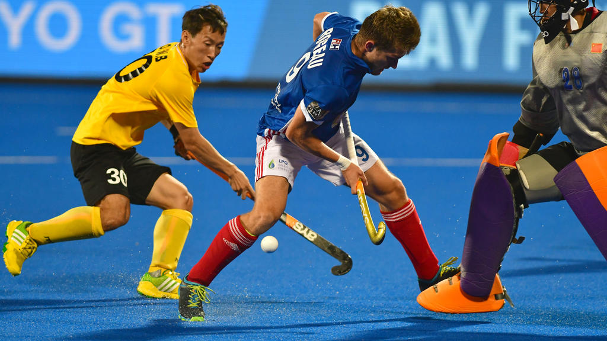

Sport de plein air et de grand terrain, le hockey sur gazon oppose deux équipes de 11 joueurs(ses) dont 1 gardien de but équipé.
Chaque équipe dispose de 7 remplaçants.
Différents schémas tactiques sont utilisés en fonction des spécificités des joueurs.
Un match se joue en quatre périodes de 15 minutes entre coupées de pauses.
Deux arbitres dirigent la rencontre.
Les contacts sont interdits et les enchaînements d’actions collectives et/ou individuelles sont nombreux.
